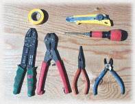
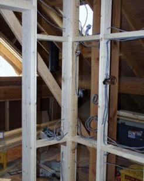
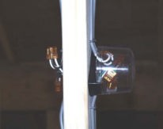
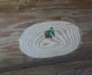
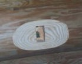
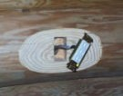
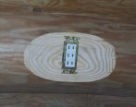
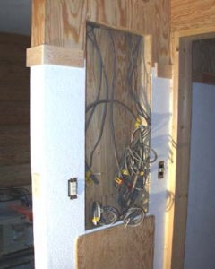
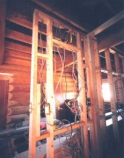

１９９９． １２月
１９９９． １２月 |
 |
どうも電気は苦手、
本を見たり、電気やさんに聞いたり、思考錯誤の結果、まあ何とかなった
コンセント３１ヶ所、電灯３２ヶ所、スイッチ３０個、ケーブル５００ｍ
その他、テレビ、電話、スピーカー用などけっこうめんどう
|  |
 ジョイント部 |
|  |  |  |  |  |
 |
コンセントは２φ、電灯は１．６φの銅単線を用いた 回路数は１３回路 |
|  | 配電盤が付くところ １３回線で 配線がぐちゃぐちゃた |
 |